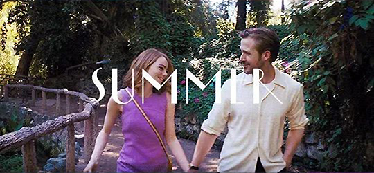
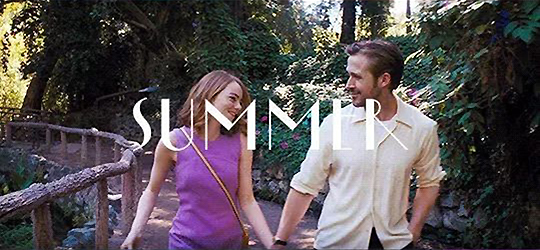

FALL
꿈과 사랑 사이에서 갈등하는, 가을
밴드의 첫 투어, 미아와 세바스찬은 말다툼한다. 미아는 세바스찬이 꿈을 버렸다고 비난하고
세바스찬은 자신이 성공을 못하는 걸 좋아하는 거냐 말한다.
2주가 지나고 미아의 연극이 있지만 세바스찬은 화보 촬영이 잡혀있다.
미아의 연극은 계획대로 잘되지 않고 관객도 룸메이트들 빼면 얼마 있지도 않고 세바스찬도 없다.
그리고 자기 연극을 무시하는 사람들의 목소리를 듣는다.
세바스찬이 늦게 도착하지만 이미 상처받은 미아는 세바스찬과의 관계를 끝내고 고향인 볼더 시티로 돌아간다.
세바스찬은 미아의 연극에 왔던 저명한 캐스팅 디렉터에게 곧 있을 영화 오디션에 왔으면 한다는 연락을 받는다.
세바스찬은 볼더 시티로 차를 몰고 가서 미아에게 오디션을 보라 설득한다.
오디션을 보는 동안 미아는 단순한 이야기를 해달라는 요청을 받고
미아는 알코올 중독으로 세상을 떠난 연극배우인 이모가 어떻게 꿈을 좇도록 영감을 줬는지에 대한
이야기를 노래하고 오디션이 성공적이었다고 확신한 세바스찬은 미아가 연기에 전념할 수 있도록 격려해준다.
둘은 어디에 있던 영원히 서로를 사랑할 거라 말하지만 서로 꿈을 좇기로 한다.
5년 후, 미아는 유명 여배우가 되어 데이빗이라는 남자와 결혼하고 딸을 두고 있다.
어느 날 밤 미아와 데이빗은 재즈 바를 가는데 미아는 자기가 디자인한 로고를 알아채고
세바스찬이 자신만의 클럽을 연 것을 알게 된다.
세바스찬은 사람들 속에서 미아를 알아채고 피아노로 자신들의 사랑 테마 곡을 연주한다.
둘은 지금의 경력을 서로 사랑하며 이뤘다면 어땠을까 상상한다.
미아와 세바스찬은 미아가 남편과 떠나기 전에 침묵의 미소를 교환한다.
 
